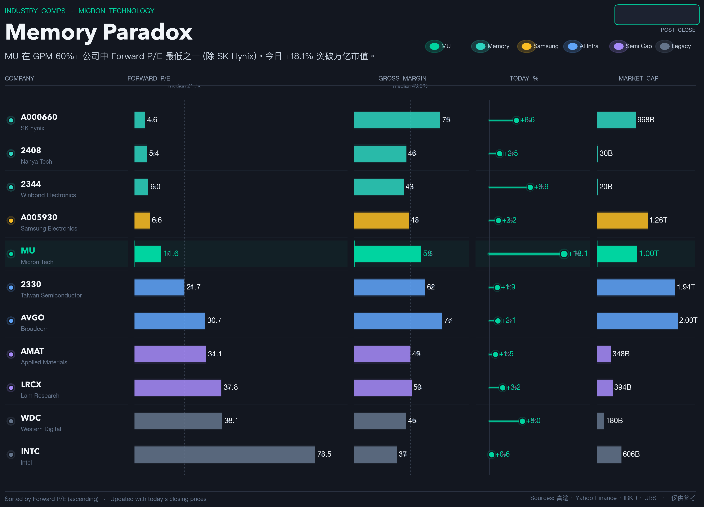
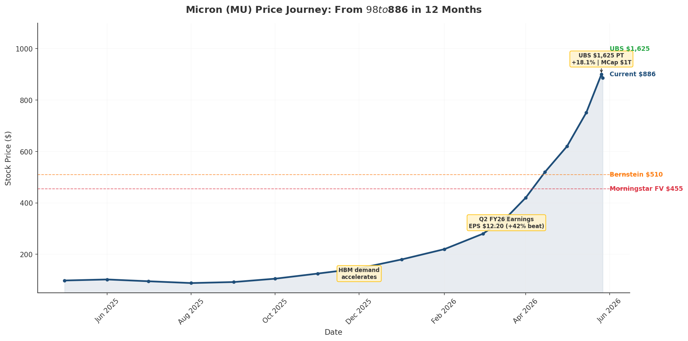
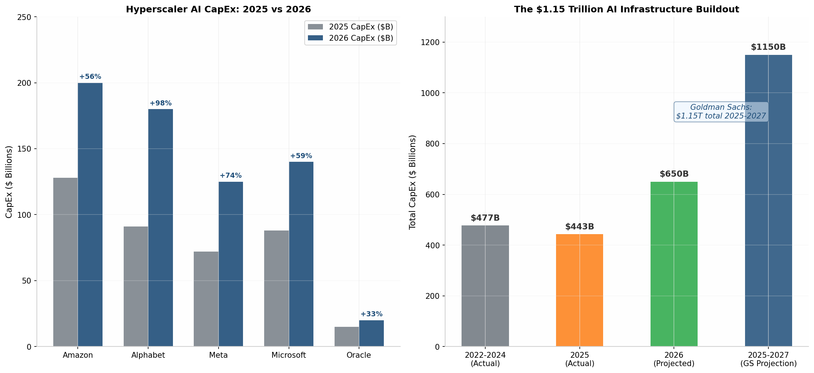
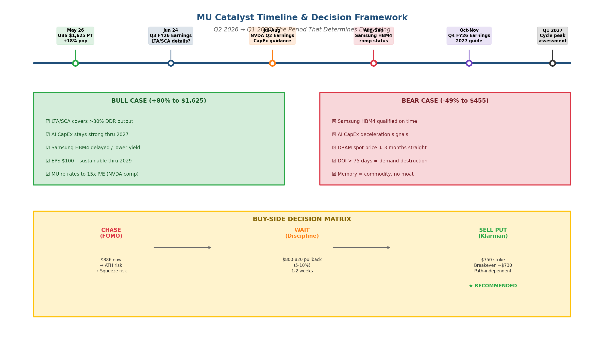
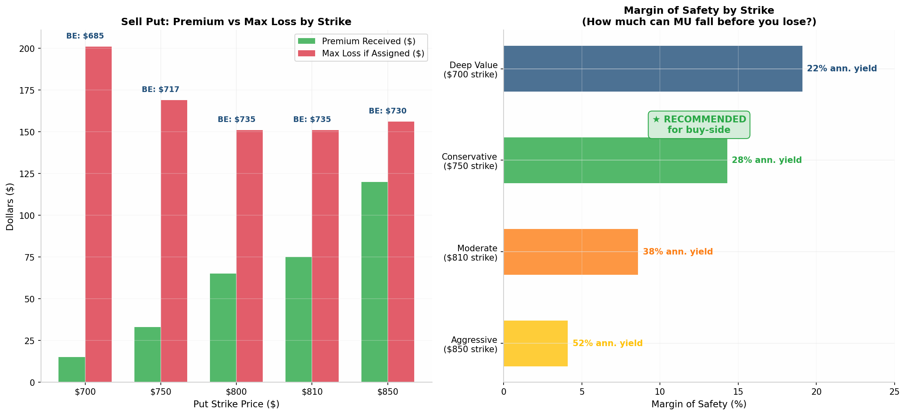

The Hynix Problem
SK Hynix posted a 75% gross margin last quarter — a record for the memory industry. Micron posted 58%. SK Hynix leads in HBM3E volume and is ahead on HBM4 qualification. SK Hynix trades at 6.86× forward earnings. Micron trades at 11.57×.
In any framework that treats memory as memory, this is incoherent. The higher-margin, higher-share producer should command the premium, not trade at a 40% discount. The market's verdict, then, is that we are not in a framework that treats memory as memory.

The price journey tells the rest of the story. MU traded sideways around $100 through mid-2025, accelerated in Q1 2026, and went vertical in Q2. From the March 18 FY26 Q2 print at $343 to the UBS target-price day at $886, the stock added 158% in just over two months.

What the Price Already Believes
The current price of $886 sits 9% below UBS's $1,625 target and 95% above Morningstar's $455 fair value. Bernstein's mid-case at $510 is, in price-distance terms, irrelevant. The stock is trading as if Bernstein does not exist.
For the price to make sense, four things must be true simultaneously:
- Hyperscaler capex must keep growing. From $443B in 2025 to $650B in 2026, and continue into 2027. Goldman Sachs's $1.15T three-year estimate is already priced in. The question is whether it holds.
- Samsung must fail to close the HBM4 gap. Samsung passed NVDA certification in March 2026. If yield exceeds 60% and share exceeds 25%, Micron's "only domestic supplier" story weakens.
- LTAs must hold through a memory downturn. Enhanced LTA coverage above 20% is the structural argument. If push comes to shove, will hyperscalers honor five-year contracts when spot prices collapse?
- Memory's multiple must permanently re-rate to tech infrastructure levels. UBS assumes 15× P/E. The historical range for memory is 4–12×. A permanent step-up requires the market to stop treating memory as cyclical.

Each of these is plausible. All four together is a stack. If three of the four hold and one breaks, the stock probably compresses 30–40%. If all four hold, the stock goes to roughly where UBS says it goes. You are being offered "all four work out" upside in exchange for "any one breaks" downside.
Where the Premium Cracks First
The Political Premium does not go to zero — the strategic logic that built it doesn't disappear. But it compresses the moment any support gives way, and the most likely first crack is the one the bull case cannot argue against: Samsung HBM4 catching up.
The moment NVIDIA qualifies Samsung at scale, "the only U.S. HBM supplier" stops being "the only supplier the U.S. ecosystem needs," and the premium recalibrates. Samsung's yield trajectory is the binary variable that matters most — because it is the variable the UBS thesis cannot absorb.
Other cracks to watch:
- NVDA Q2 earnings (July). Any CapEx guidance cut ripples through the entire AI supply chain — not just NVDA.
- DRAM spot price. Three consecutive months of decline would signal the supercycle is peaking.
- Inventory days (DOI). Above 130 days with order pushouts = demand destruction.

Seven Sharp Questions
Every buy-side investor not already positioned faces a brutal choice. These seven questions frame that choice — each with a trigger, a current status, and a monitoring frequency.
Q1 · Cycle Ending: What Are the Exit Triggers?
| Trigger | Status | Warning | Frequency |
|---|---|---|---|
| Samsung HBM4 qualification | Passed NVDA cert, Mar 2026 | Yield >60%, share >25% | Monthly |
| Hyperscaler capex | ~$650B in 2026 (+47%) | NVDA Q2 guidance cut | Quarterly |
| DRAM/NAND spot price | Q2 contract +57%/+65% | 3 consecutive months down | Weekly |
| Inventory (DOI) | MU DOI = 123 days | DOI > 130 days | Quarterly |
Q2 · How Much of +20% Is Short Squeeze?
Short interest sits at 37.27M shares — just 3.31% of float, with days-to-cover at 1.0. The short base has actually grown from 29.37M in February to 37.27M in April. Monday's pop is not a classic short squeeze; it is a gamma squeeze layered on FOMO.
Q3 · Will AI CapEx Ramp Persist?
AMZN says it is "monetizing capacity as fast as we install it." GOOGL's TPU self-sufficiency reduces external GPU demand. NVIDIA is up only 14% YTD versus MU's 204%. The market is more cautious on the GPU supplier than the memory beneficiary — which is a tell.
Q4 · How Does the MU vs SKH Spread Close?
Current spread: MU 11.57× / SKH 6.86× = 1.69× premium. A naive pair trade (long MU / short SKH) shorts the lower-multiple, higher-margin producer — expensive. A better approach is to monitor the spread as a sector-sentiment proxy.
Q5 · If Not in Position, When to Act?
| Option | Strategy | Pros | Cons |
|---|---|---|---|
| A. Chase ATH | Buy at $886 | No FOMO | No margin of safety, squeeze risk |
| B. Wait pullback | $800–820 entry | Better price | May never come |
| C. Wait catalyst | Samsung HBM4 news | More info | Time decay |
| D. Sell put $750 | Collect premium | Path-independent, defined risk | Capped upside, needs margin |
Q6 · Where Is the Margin of Safety?
Sell Jul/Aug $750 put (45–60 DTE). Breakeven ~$730 = 1.6× Morningstar FV. Annualized yield ~25–30%. Pre-earnings IV is rich. If assigned, you own MU at a 17.6% discount.

Q7 · Is the Catalyst Path Explicit?
Mark your calendar: Jun 24 Q3 earnings (LTA details) → Jul-Aug NVDA Q2 (CapEx guidance) → Aug-Sep Samsung HBM4 ramp → Oct-Nov Q4 FY26 (2027 guide). Each is binary.
The Trade
The trade is not to short Micron. The trade is to recognize that buying Micron at $886 means paying full price for the Political Premium thesis while bearing the full risk of its first leg cracking.
The buy-side answer is selling puts at $750 — entering only at a price that already builds in the first 15% of recalibration. If MU rises to $1,000, you collect premium. If MU falls to $750, you are assigned at a cost basis of roughly $730 — 17.6% below the current price. If it falls further, your downside is capped by the strike. If it rallies, your upside is capped by the premium.
This is not a thesis about whether memory is infrastructure. It is a thesis about what is already in the price.
You are being offered "all four bull-case legs work out" upside in exchange for "any one breaks" downside. The price is 95% of the way to the bull case and 0% of the way to the bear case. That is not a balanced bet. That is a specific directional position — and if you are going to take it, you should know exactly what you are betting on.
Three valuation poles, but only one of them — Morningstar's $455 — starts with "this is a commodity business" and lands at a defensible number. UBS's $1,625 starts with the share price and reverse-engineers the multiple to justify it. Bernstein splits the difference because that is what sell-side analysts do when they don't want to be wrong.
The market has already chosen. Your job is to notice.
Research confirms value. Discipline manages behavior. Time absorbs deviation. Risk control keeps you alive. — The only system that doesn't depend on timing
Sources & Data
- Morningstar — MU Fair Value & Moat Analysis
- Yahoo Finance — Real-time MU Data
- MarketBeat — Analyst Ratings & Short Interest
- TipRanks — Timothy Arcuri (UBS) Track Record
- SeekingAlpha — UBS Arcuri $1,625 Target (May 26, 2026)
- Yahoo Finance — Bernstein Memory Tracker (May 7, 2026)
This analysis is independent research for educational purposes only. The author holds no position in MU at the time of publication. Not financial advice. Do your own due diligence before making investment decisions.